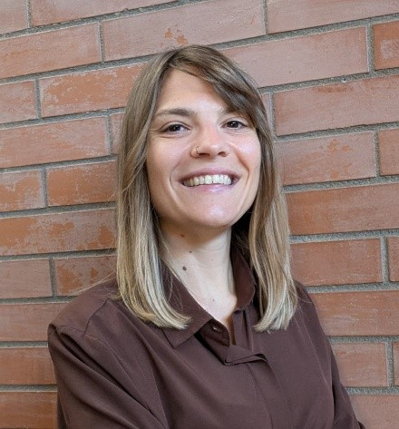
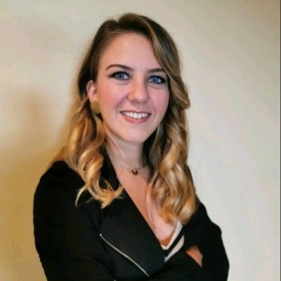
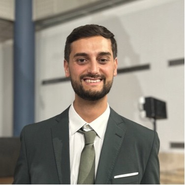
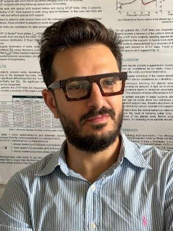

Organizing Committee

Marta Gherardini
Assistant Professor
The BioRobotics Institute, Scuola Superiore Sant'Anna, Italy
Marta Gherardini is an Assistant Professor at The BioRobotics Institute of Scuola Superiore Sant'Anna, Pisa, Italy. Her research focuses on biomedical robotics, prosthetics, and human–machine interfaces, with particular emphasis on developing next-generation control and sensory feedback technologies for upper-limb prostheses based on implantable magnets. She received her PhD in Biorobotics with honors from Scuola Superiore Sant'Anna in 2022, and has contributed to several national and European research projects on wearable robotics and prosthetic technologies. She has authored and co-authored numerous publications in leading international journals, including Science Robotics and Science Advances, serves as Associate Editor for IEEE Transactions on Neural Systems and Rehabilitation Engineering, and is actively involved in the international robotics and rehabilitation research community.

Chiara Livolsi
Researcher
The BioRobotics Institute, Scuola Superiore Sant'Anna, Italy
Chiara Livolsi is involved in the Fit4MedRob initiative, contributing to research activities focused on advanced technologies for rehabilitation, assistive devices, and human–machine interaction. Her work supports the development of innovative solutions for personalized rehabilitation and future clinical applications.

Christian Tamantini
Researcher
Consiglio Nazionale delle Ricerche (ISTC-CNR)
Christian Tamantini is a researcher at the National Research Council of Italy. His research focuses on rehabilitation robotics, human–robot interaction, multimodal sensing, and artificial intelligence methods for assessment, monitoring, and personalized intervention in healthcare and assistive scenarios. His work combines physiological, kinematic, and behavioral data with computational models and adaptive robotic systems, with applications in rehabilitation, occupational safety, and long-term user support. He has contributed to national and European research projects and is involved in teaching and student supervision in robotics and bioengineering. He also serves as Associate Editor for Frontiers in Digital Health, Discover Robotics, and Discover Artificial Intelligence.

Andrea Tigrini
Assistant Professor
Department of Information Engineering, Università Politecnica delle Marche, Italy
Andrea Tigrini is a researcher in Bioengineering at the Università Politecnica delle Marche, Italy. His scientific activity focuses on developing models and algorithms for prosthetic control, human–machine interfaces based on EMG and wearable sensors, integrating physics-based and AI approaches. He was a JSPS Postdoctoral Fellow at Kyoto University (Japan) and is the author of more than 50 publications in international journals and conference proceedings. He currently serves as Associate Editor for the Journal of NeuroEngineering and Rehabilitation. He is a member of IEEE, the Italian National Group of Bioengineering (GNB), the Italian Society of Clinical Movement Analysis (SIAMOC), and I-RIM – Institute of Robotics and Intelligent Machines.